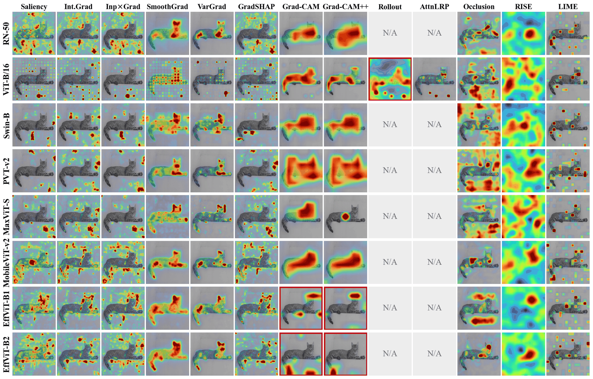
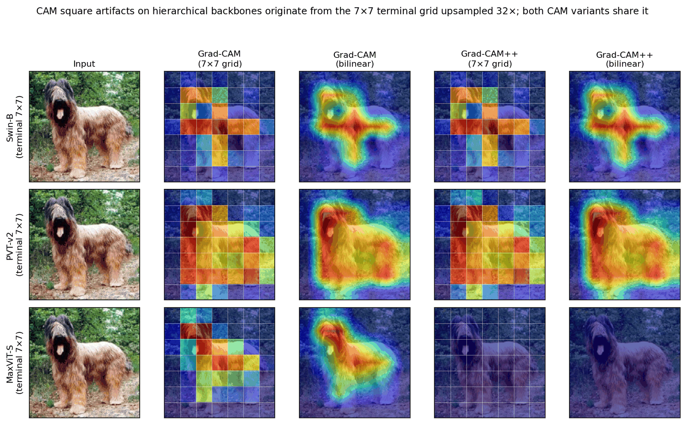
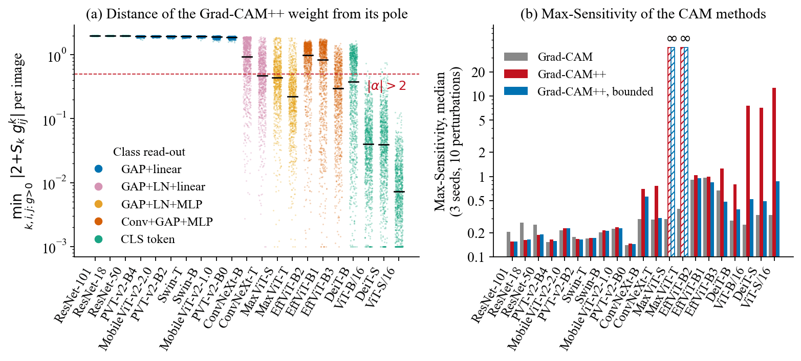
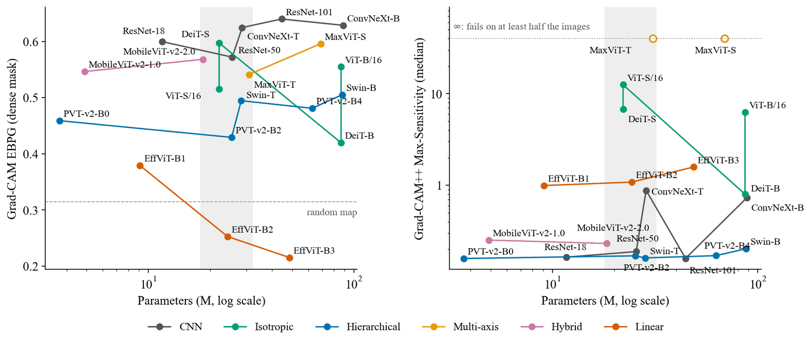

Does Explainability Transfer?
A Controlled Benchmark of Attribution Methods on Vision Transformers and CNNs
- 1Faculty of Computing, Sabaragamuwa University of Sri Lanka
- 2Faculty of Engineering, University of Moratuwa, Katubedda, Sri Lanka
- 3School of Computing Technologies, RMIT University, Melbourne, Australia
- 4School of Engineering & Digital Technologies, University of Southern Queensland, Brisbane, Australia
- 5School of Engineering & Technologies, UNSW, Canberra, Australia
- 6Faculty of Science and Technology, Charles Darwin University, Darwin, Australia
Abstract
Most evidence on the effectiveness of explainable artificial intelligence (XAI) attribution methods has been established on convolutional neural networks (CNNs), with limited investigation into whether these conclusions generalise to the diverse Vision Transformer (ViT) architectures that now dominate computer vision. This paper presents a controlled benchmark that evaluates attribution quality across five dimensions: faithfulness, localisation, robustness, complexity, and computational cost. A standardised framework assesses 13 attribution methods from four algorithmic families on eight representative backbones spanning CNNs, isotropic ViTs, hierarchical transformers, hybrid architectures, and linear-attention transformers.
The results show that attribution performance is strongly architecture-dependent and that rankings established on CNNs do not reliably transfer to transformer-based models. CAM-based methods achieve the highest scores under the conventional bounding-box localisation metric on CNNs and most ViTs but perform poorly on linear-attention architectures. Pixel-level dense-mask evaluation further reveals that these gains largely reflect metric saturation rather than accurate localisation. CAM-based methods also exhibit limited robustness on backbones whose class score is not a pooled linear read-out of the feature map, a failure we trace for Grad-CAM++ to a pole in its closed-form weights that also affects a convolutional network, whereas attention rollout provides consistently stable explanations with poor localisation. Furthermore, faithfulness correlation offers limited discrimination between attribution methods, highlighting the limitations of single-metric evaluation. These findings challenge prevailing conclusions on attribution performance and demonstrate the need for architecture-aware, multi-dimensional evaluation.
Benchmark scope
Figures below are computed from the published result records in this repository, not entered by hand.
The research question
Are attribution methods that perform well on CNNs equally reliable on modern transformer architectures?
Benchmarks routinely establish a ranking of attribution methods on a convolutional backbone and then apply the winner elsewhere. That inference only holds if the ranking is a property of the method rather than of the architecture it was measured on. This benchmark holds the dataset, the metrics and the evaluation protocol fixed, varies the backbone across five architecture families, and reads off whether the order survives.
Transferability
Each method's rank computed on CNNs only, against its rank computed on transformer backbones only.
Result matrix
Every measured cell of the benchmark. Rows are attribution methods, columns are backbones grouped by architecture family. Hover a cell for its sample count, the images scored by rule, and its source.
How a cell is scored. Every evaluated image enters every cell: 100 images for ResNet-50 and ViT-B/16 and 50 for the other backbones (EBPG: 1,000, or 100 for Integrated Gradients and the perturbation methods). A method can return a constant map, on which the metrics are undefined; that image gets no credit (0) rather than being left out. On Max-Sensitivity it counts as a robustness failure, and because that metric is unbounded and heavy-tailed its cells are medians: ∞ marks a method that fails on at least half of the images. Every evaluation is seeded from its backbone, method and image.
Ranking explorer
Method ranking within a chosen scope. Switching the scope rearranges the order — that instability is the result.
Architecture explorer
Select a backbone to see how each attribution method performs on it, and how that differs from the method's benchmark-wide mean.
Explanation gallery
One image, every backbone × every attribution method. Rows are the eight benchmark backbones, columns the 13 attribution methods. Each model is explained at its own top-1 class.

N/A cells are methods that do
not apply to that backbone: Attention Rollout needs a global CLS-token attention
map, which only the isotropic ViT has, and AttnLRP's propagation rules are defined
for the isotropic ViT; on the other backbones only a generic fallback would run,
so it is not shown.
Source:
scripts/bench/qualitative_grid_cat.py
Where the CAM squares come from
Grad-CAM maps on hierarchical backbones show blocky square structure. It is not a property of the explanation — it is the terminal feature grid made visible.

scripts/bench/cam_upsampling_artifact.py
Why Grad-CAM++ breaks
Grad-CAM++ weighs each gradient with a closed-form coefficient α = 1 / (2 + S·g), which has a pole where S·g = −2. Backbones whose class score is a pooled linear read-out of the feature map stay far from it; the others do not, whatever their attention type.

scripts/revision_neucom/gcpp.py, ms.py,
fig_revision.py

scripts/revision_neucom/analyze_revision.py,
fig_revision.py
Computational cost
Time to produce one explanation, GPU-synchronised, averaged over the backbones on which each method applies. The scale is logarithmic — the span from the cheapest method to the most expensive perturbation method is close to three orders of magnitude.
Dataset
Every backbone and every attribution method is evaluated on the same images, so differences in the results come from the architecture and the method rather than from the data.
ImageNet-S
ImageNet validation images paired with pixel-level semantic segmentation masks. The masks give localisation metrics a real object boundary instead of a bounding box — which is what makes the bounding-box versus dense-mask comparison possible at all.
- Source
- braceletboy/imagenet-s on the Hugging Face Hub
- Split
validation- Original project
- LUSSeg/ImageNet-S
- Images
- A fixed set of 1,000 (161 classes); the five-metric grid uses the leading 100 (ResNet-50, ViT-B/16) or 50 (other backbones)
- Redistributed here
- No — you fetch it yourself; see below
Loaded as:
from datasets import load_dataset
ds = load_dataset("braceletboy/imagenet-s", split="validation", streaming=True)
The benchmark configs read a local .pt cache rather than
the live stream. Streaming is unreliable over long runs, so
scripts/cache_imagenets.py pulls the sample once with
retries and every run then reads from disk — which also pins the
runs to a fixed sample set instead of whatever the stream happened to
yield.
Using this benchmark means using ImageNet-S — please cite it as well:
@article{gao2022luss,
title={Large-scale Unsupervised Semantic Segmentation},
author={Gao, Shanghua and Li, Zhong-Yu and Yang, Ming-Hsuan and
Cheng, Ming-Ming and Han, Junwei and Torr, Philip},
journal={IEEE Transactions on Pattern Analysis and Machine
Intelligence (TPAMI)},
year={2022}
}What is measured
The benchmark reports five evaluation dimensions. This panel states which of them the published results actually contain, and which they do not.
Provenance
Reproducing these results
Every number on this page is generated from the repository, not typed into it.
git clone https://github.com/Nishan-Charlie/VIT_XAI_Bench
cd VIT_XAI_Bench
pip install -e ".[dev]"
python scripts/smoke_test.py # verify the install, ~30 s on CPU
python -m xai_bench.runner --config configs/revision_grid_seeded.yaml
# the grid (also _attnlrp and _50)
python scripts/build_results.py # runs -> canonical records
python scripts/validate_results.py # schema + range + duplicate checks
python scripts/export_web_data.py # records -> this website
The page reads website/public/data/benchmark.json at load time,
so re-running the export refreshes every table and ranking here without
touching the frontend.
BibTeX
@article{nishankar_does_explainability_transfer,
title = {Does Explainability Transfer? A Controlled Benchmark of
Attribution Methods on Vision Transformers and CNNs},
author = {Nishankar, Sathiyamohan and Pathirana, Nethmi and
Sanjeewani, Pubudu and Perera, Asanka and
Thuseethan, Selvarajah},
year = {2026}
}